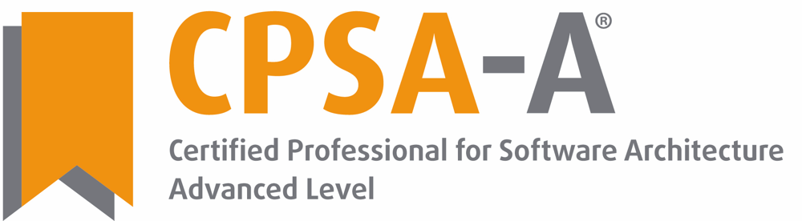
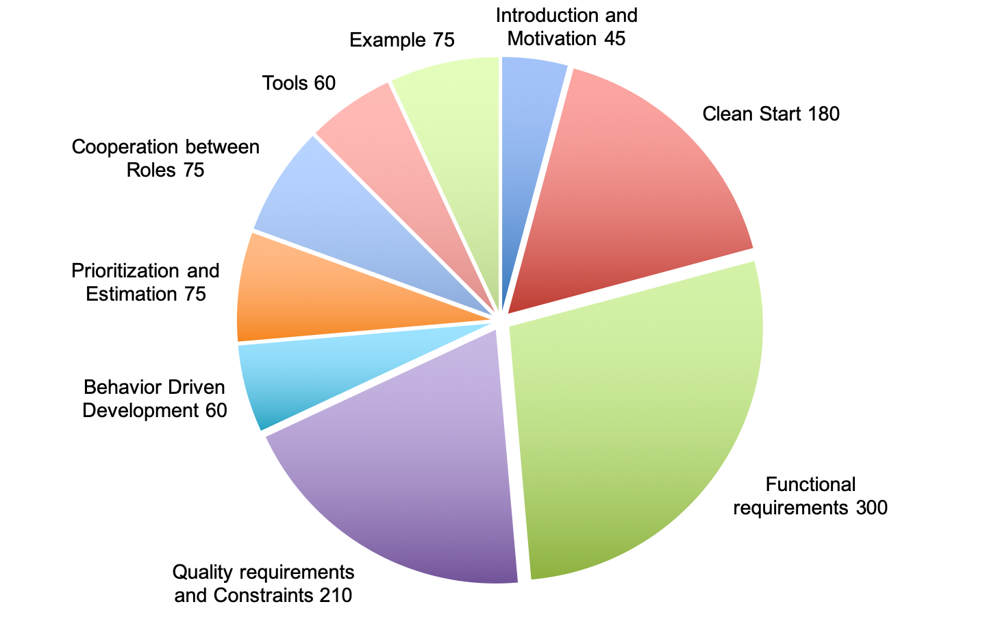

© (Copyright), International Software Architecture Qualification Board e. V. (iSAQB® e. V.) 2019
The curriculum may only be used subject to the following conditions:
-
You wish to obtain the CPSA Certified Professional for Software Architecture Advanced Level® certificate. For the purpose of obtaining the certificate, it shall be permitted to use these text documents and/or curricula by creating working copies for your own computer. If any other use of documents and/or curricula is intended, for instance for their dissemination to third parties, for advertising etc., please write to info@isaqb.org to enquire whether this is permitted. A separate license agreement would then have to be entered into.
-
If you are a trainer or training provider, it shall be possible for you to use the documents and/or curricula once you have obtained a usage license. Please address any enquiries to info@isaqb.org. License agreements with comprehensive provisions for all aspects exist.
-
If you fall neither into category 1 nor category 2, but would like to use these documents and/or curricula nonetheless, please also contact the iSAQB e. V. by writing to info@isaqb.org. You will then be informed about the possibility of acquiring relevant licenses through existing license agreements, allowing you to obtain your desired usage authorizations.
We stress that, as a matter of principle, this curriculum is protected by copyright. The International Software Architecture Qualification Board e. V. (iSAQB® e. V.) has exclusive entitlement to these copyrights.
The abbreviation "e. V." is part of the iSAQB’s official name and stands for "eingetragener Verein" (registered association), which describes its status as a legal entity according to German law. For the purpose of simplicity, iSAQB e. V. shall hereafter be referred to as iSAQB without the use of said abbreviation.
General information on the iSAQB Advanced Level
On iSAQB and CPSA-A
The International Software Architecture Qualification Board (iSAQB®) brings together professional software architecture experts from industry, consulting, training, academia and other organisations.
Its Certified Professional for Software Architecture programme (CPSA® ) provides software architects with standardised schemes for training that is globally recognised. More on https://isaqb.org.
What does an Advanced Level Module convey?
The iSAQB Advanced Level offers modular training in three competence areas with flexible pathways through the programme. It acknowledges and supports individual strengths and focus points. - The certification is based on a homework paper. Grading and oral examination will be carried out by experts designated by iSAQB.
What qualifications do Advanced Level (CPSA-A) graduates gain?
CPSA-A graduates are able to:
-
design medium to large IT systems independently and based on solid methodical foundations
-
take technical and operational responsibility in IT systems with medium to high criticality
-
design and document measures to achieve quality requirements and support development teams implementing those measures
-
manage communication relevant to architecture in medium to large development teams
Requirements for the CPSA-A certification
-
successful training and graduation of Certified Professional for Software Architecture, Foundation Level® (CPSA-F)
-
at least three years industrial, full-time experience in the IT sector; including collaboration on design and development of at least two different IT systems
-
exceptions may be granted (for example: contributions to open source projects)
-
-
participation at iSAQB Advanced Level trainings worth at least 70 credit points, and all three skill areas will have to be covered with a minimum of 10 credit points in each skill area
-
passing the CPSA-A certification exam
® Advanced Level (CPSA-A)">
The Req4Arc Curriculum
Was does the module Req4Arc convey?
Architects and development teams often get only mediocre requirements as input for their work. The goal of this module is to equip architects with enough requirements know-how, so that they can take educated architecture decisions, based on the real needs of stakeholders. They should either know how to elicit requirements (in agile and iterative approaches) or - at least - to know what to ask from others in their environment.
Curriculum structure and recommended durations
| Content | Teaching (minutes) | Exercises (minutes) |
|---|---|---|
1. Introduction and Motivation |
45 |
none |
2. Clean Start |
90 |
90 |
3. Handling Functional Requirements |
180 |
120 |
4. Handling Quality Requirements and Constraints |
120 |
90 |
5. Behavior-Driven Development |
60 |
none |
6. Prioritization and Estimation of Requirements |
45 |
30 |
7. Cooperation between Roles |
75 |
none |
8. Tools for Requirements Engineering |
60 |
none |
9. Example |
75 |
none |
Sum: |
750 |
330 |
Total: |
1080 min (18h) |
|

Duration, didactics, and further details
The durations mentioned above are recommendations. A course for the Req4Arc should last at least 3 days. Providers may vary length, didactics, type and structure of exercises, and structure of the course. In particular, examples and exercises are left unspecified in this curriculum.
Licensed courses for Req4Arc contribute the following credit points to the Advanced Level graduation:
Methodical Competence: |
20 CP |
Technical Competence: |
0 CP |
Communicative Competence: |
10 CP |
Further information and terminology
To the extent necessary for understanding the curriculum, we have added definitions of required and important terms at the end of this document and to the iSAQB glossary.
Help us improve this curriculum
You find the most recent version of this document online (https://isaqb-org.github.io/curriculum-req4arc/), where you are encouraged to provide feedback.
1. Introduction and Motivation
This topic introduces the need for sufficient requirements as a basis for making architectural decisions. Architects should be aware that they can either ask persons responsible for requirements engineering to deliver this input or they have to elicit and understand the requirements themselves.
However, there is not need for complete requirements, only for the subset necessary to make architectural decisions (called architecturally significant requirements). The rest can be elicited in an iterative and incremental manner, to be available just in time for decision making.
Teaching: 45 min |
Exercises: 0 min |
1.1. Terms and concepts
Architecturally significant requirements (ASR), Agile Requirements Engineering
1.2. Learning goals
LG 1-1: Understanding the need for requirements as basis for decision making
-
Know the need for good requirements, especially quality requirements seen from the perspective of software architecture
-
Know the key tasks for software architects which include clarifying requirements and constraints
-
Understand that architects do not need complete requirements up-front, but should focus on architecturally significant requirement
LG 1-2: Understanding responsibilities, roles and key activities
-
Know that there are different job titles for persons responsible for requirements (Business Analysts, Requirements Engineers, Product Owner)
-
Understand their relationship to architects and development teams.
-
Know key tasks in requirements engineering, including elicitation, documentation, checking and maintenance
LG 1-3: Understanding the incremental nature of requirements elicitation ("Just in Time")
-
Understand that requirements and architecture can (and should) be developed iteratively
-
Understand that architects do not need "complete" requirements, but always just enough requirements to make design decisions for the next iterations
-
Understand that requirements can be collected iteratively and incrementally
2. Clean Start
Teaching: 90 min |
Exercises: 90 min |
Although requirements engineering today should be performed in an iterative, incremental way there is a need for some up-front activities to guide detailed requirements elicitation. They are called a "clean start" for a project or product development. These mainly include:
-
Definition of vision and goals
-
Identifying stakeholders
-
Setting the scope
-
“Breadth before depth” approach to allow for early prioritization and planning.
2.1. Terms and concepts
Vision, Business Goals, Stakeholders, Scope, Context, SMART, PAM
2.2. Learning goals
LG 2-1: Understanding the need for some (limited) upfront activities
-
Understand that even with iterative development some upfront activities are necessary.
-
Know that explicit knowledge of visions, goals and relevant stakeholders are required so that the development team can take informed decisions about the systems’ architecture.
-
Understand that an agreement about scope and context is required.
LG 2-2: Understanding the need for (high level) vision and business goals
-
Understand that visions or business goals are your highest level requirements, i.e. those requirements that are (hopefully) not changed during a project
-
Understand that visions and goals should be quantified and made measurable to be able to check success in terms of business value.
LG 2-3: Different options and notations for expressing visions and business goals
-
Know various ways to define vision and goals (explicit goal statements, value propositions for different stakeholders, vision box, "news from the future")
-
Know mnemonics for vision statements (SMART, PAM)
LG 2-4: The importance of different stakeholders and their influence on the product or system
-
Know that stakeholders are the most important sources of requirements.
-
Understand that missing Stakeholders may mean missing requirements.
-
Understand that architects should be aware that stakeholders need to be addressed in specific, adequate ways.
LG 2-5: Different needs and values of different stakeholders ("value propositions")
-
Understand that different stakeholders will have different needs and may differ in their opinions what is valuable in a product
-
Know that a prioritized stakeholder list helps to prioritize requirements by business value
-
Know that architects have to handle goal conflicts between stakeholder’s needs
LG 2-6: Scoping and delimiting the context of the system
-
Distinguish between business and product scope
-
Know about the importance of external interfaces
-
Distinguish between various levels of externality (external to the system, external to the business unit, external to the enterprise)
-
Know different options and notations for expressing scope and context, i.e. context diagrams
3. Handling Functional Requirements
Teaching: 180 min |
Exercises: 120 min |
Stakeholders usually phrase their functional requirements on different levels of abstraction. Architects need to know how to handle these different granularities of requirements, how to relate coarser requirements to finer ones, how to split coarse requirements or group finer requirements to keep an overview.
This topic introduces criteria for spitting or grouping functional requirements in the large and in the small. Architects will understand when requirements are precise enough to be taken on by the development team.
Over the last decades many notations have been developed to express functional requirements. They range from textual representations to various graphical notations, but also include prototypes, mockups and specific examples in terms of scenarios. Strengths and weaknesses, as well as advantages and disadvantages will be discussed.
3.1. Terms and concepts
Functional Requirements, Uses Case, Epic, Feature, Story, Scenario, Acceptance Criteria, Definition of Ready (DoR), INVEST, CCC-Rule
3.2. Learning goals
LG 3-1: Understanding the difference between functional and other requirements
-
Know the definition of functional requirements
-
Distinguish functional requirements from quality requirements and constraints
LG 3-2: Hierarchies of functional requirements
-
Understand that (functional) requirements can be expressed on different levels of granularity, from coarse grained to very fine grained
-
Understand that architects at least need an overview of coarse grained functional requirements for planning and estimating
-
Know that not every functional requirement has to be detailed immediately
LG 3-3: Criteria for splitting coarse-grained functional requirements
Understand that many different criteria can be applied to decompose a system into smaller chunks, i.e. functional or feature-oriented decomposition, organizational decomposition, geographical decomposition, object-oriented decomposition, process-oriented decomposition or hardware-oriented decomposition.
LG 3-4:Decomposing or grouping requirements into value-adding processes
-
Know that a process-oriented decomposition (business processes, use cases, stories, event process chains, …) are a proven approach to allow for early implementation of some of them and postpone others), thus creating early business value.
-
Understand the first part of "INVEST" [Wake2003]: functional requirements should be "independent", "negotiable" and "valuable".
LG 3-5: Documenting value-adding processes
-
Know different notations to capture value-adding processes
-
Know how to write good stories (i.e. [Adzic-2014]: As a <role> I want to <functionality> so that <advantage>)
-
Know how to capture processes in use case diagrams and use case specifications
-
Understand the difference between use cases and user stories
LG 3-6: Refining functional requirements
-
Know criteria for decomposing coarse level functional requirements [Lawrence], [Jacobson+2011], [Hruschka-19]
-
Know that in agile requirements engineering that decomposed parts of a larger requirement still should offer business value.
LG 3-7: Documenting functional requirements
-
Understand that detailed functional requirements could be documented in various ways, e.g. in textual form but also in many graphical forms that usually add more precision, less interpretability, but a sometimes harder to create and understand compared to plain language requirements
-
Know graphical models like activity diagrams, BPMN, information models, state models and when to use which notation
LG 3-8: Knowing when to stop refining functional requirements
-
Understand that functional requirements are precise enough as soon as the development team has no more questions about their meaning
-
Understand the second part of "INVEST" [Wake2003]: "Estimable", "Small enough", "Testable"
-
Know the "Definition of Ready" (DoR) and why it is important for the cooperation between stakeholders
LG 3-9: Acceptance criteria for functional requirements
-
Know that functional requirements should have acceptance criteria, i.e. criteria to determine (after implementation) whether the requirement has been fulfilled
-
Understand the "CCC-Rule": card, conversation, confirmation. The acceptance criteria are the basis for confirmation.
LG 3-10: Understanding specification-by-examples
-
Understand that sometimes a couple of good examples for functional requirements are better than a bad abstraction
-
Know that scenarios are examples for functional requirements
-
Know various notations to express scenarios
-
For more details: see section 5 (BDD)
LG 3-11: Know methods for elicitation of functional requirements
-
Know that there are many different elicitation techniques that architects should be aware of, e.g. interviews, questionnaires, brainstorming sessions, three amigo sessions, knowledge crunching, event storming and many others
-
Know when to pick which elicitation technique to improve communication with stakeholders
4. Handling Quality Requirements and Constraints
Teaching: 120 min |
Exercises: 90 min |
This topic deals with the kinds of requirements that are often more important for architects than functional requirements: quality requirements and constraints. These two categories are often called non-functional requirements, although we recommend to avoid this term. Categorization schemata for quality requirements and constraints are discussed, as well as notations to capture them.
Similar to functional requirements qualities and constraints are often very vague at the beginning. Architect learn how to refine them, or how to derive functional requirements from qualities in order to make them more precise. Also quality requirements can be made more precise using scenario-based approaches. Last but not least: also quality requirements have to be made checkable by adding acceptance criteria to them.
4.1. Terms and concepts
Quality Requirement, Constraint, Non-functional Requirement
4.2. Learning goals
LG 4-1: Understanding the difference between quality and other requirements
-
Know a definition of quality requirements and constraints
-
Know that there is a very thin borderline between functional requirements and quality requirements, since qualities are sometimes made more precise by transforming them into functions.
LG 4-2: Understanding categories of qualities and constraints
-
Know checklists for quality requirements, quality standards (e.g. ISO 25010, VOLERE, …)
-
Know categories of constraints (organizational constraints, technical constraints, …)
-
Understand that architects don’t need all quality requirements and constraints early in the project, but have to find the most important ones, since they are architecture drivers and will influence very important architectural decision
LG 4-3: Eliciting and specifying quality requirements
-
Knowing how to specify quality scenarios or textual specifications, including motivation ("why?")
-
Using checklists and categorization schemes to find the most important candidates of quality requirements
-
Know that architects should be aware that different styles of eliciting and specifying qualities can achieve quicker or slower results with different stakeholders. They should know the most efficient ways depending on skills, motivation and time of their stakeholders.
LG 4-4: Refining quality requirements
-
Know that quality requirements often start vague. Architects have various ways of adding precision
-
they could either use subcategories of the categorization schemes (user friendliness = ease of use and ease of learning)
-
they could find scenarios to express the intended meaning more precisely, or
-
they could suggest functional requirements that fulfil the intend of the quality requirement (i.e. suggest role concept and password to provide security)
-
-
Know the quality trees [ATAM] can be used to refine quality requirements
LG 4-5: Specifying acceptance criteria for quality requirements
-
Know that quality requirements need acceptance criteria too
-
Know that they can often be specified by giving tolerances or thresholds, or allowing deviations for certain stakeholders (i.e. person who do not speak English are given 20% more time to achieve a result)
LG 4-6: Prioritizing quality requirements
-
Know that architects should prioritize scenarios for quality requirements in two dimensions: business value and technical challenge
-
Know that only requirements with high business value and big technical challenge should be considered early on for architectural decisions
LG 4-07: Pragmatic alternatives to detailed acceptance criteria
-
Know that for some qualities it is hard to check their fulfilment right after implementation. Another way to check such qualities is statistical observation over time ("see if requirement is met") instead of quantified acceptance criteria.
-
Know that for UI-requirements e.g. usage-analytics can be used to check whether they are sufficiently well implemented.
5. Behavior Driven Development
Teaching: 60 min |
Exercises: none |
Behavior Driven Development (originally suggested by [North]) aims at closing the gap between specification of requirements and automated testing by advocating close collaboration among developers, QA and non-technical or business participants. With BDD, requirements are formulated in a way that can later be used to run automated tests. Thus, BDD is one example of executable specifications.
Behaviour Driven Development (or BDD) therefore is a collaborative requirements discovery practice that uses conversations around concrete examples to build a shared understanding.
5.1. Terms and concepts
Behaviour Driven Development (BDD), Automated Testing, Given-When-Then (GWG)
5.2. Learning goals
LG 5-1: Applicability and application domains for Behavior Driven Development (BDD)
-
Know that BDD originated from approaches and technologies like TDD (test-driven development) and ATDD (acceptance-test-driven development).
-
Know that various options exist to add precision to requirements
-
State- or activity models
-
given-when-then scenarios
-
-
Know that BDD is applicable for a broad range of IT-system types, e.g. information systems, business intelligence systems, mobile apps
LG 5-2: Principles of Behaviour-Driven Development (BDD)
-
Know that BDD is a collaborative requirements discovery practice that uses conversations around concrete examples to build a shared understanding of requirements.
-
Know that collaborative workshop and discussion format, like the Three Amigo Sessions (TAS), help in getting correct requirements. In a TAS, the three roles "product owner" (or business analyse), "developer" and "tester" collaborate in discovering requirements.
-
Know that concrete examples are a suitable way to help explore the problem domain, and they provide a basis for acceptance tests. Example mapping helps to find rules, open questions and identify new stories.
-
Know that BDD explains user requirements in features, breaks features down into stories and the the stories into to (executable) examples.
LG 5-3: Gherkin and Cucumber as examples for BDD
-
Know the `Given-When-Then (GWT) syntax, e.g. as proposed by Gherkin.
-
Know that Given-When-Then based formulation of requirements facilitates test automation.
-
Know that several tools exist to map Given-When-Then behavior specifications to the systems' source code (e.g. Cucumber, RSpec, SpecFlow, GivWenZen).
-
Optionally know examples of GWT specifications with the appropriate glue code for automatic execution.
6. Prioritization of Requirements
Teaching: 45 min |
Exercises: 30 min |
Iterative and incremental development strives for implementing those requirements first that deliver high business value. In In order to do that architects should make sure that requirements are ordered by business value. This allows to concentrate on the ones with highest business value and postpone the refinement of others until later. But architects should be aware that business value can have a lot of different meanings to different stakeholders. This section discusses different kinds of value.
The other prerequisite for implementing some requirements earlier than others is to have estimates in order to determine how long it will take to implement the requirements and get indicators on where maybe more requirements work is necessary.
6.1. Terms and concepts
Business value, risk, ranking, prioritization, affinity estimation, wall estimation, story points, WSJF, MoSCoW-prioritization
6.2. Learning goals
LG 6-1: Understanding different kinds of business value
-
Understand that different stakeholders may see different value in requirements. Some of them may result in short turn revenue, others in improvement of customer satisfaction, or quick time-to-market. Others might reduce the risk for the rest of the development, or create a platform for longer term cost savings.
-
Know different methods for expressing value, e.g. MoSCoW-prioritization, defined ranges of values, linear sorting of all requirements, weighted factor methods, cost of delay, …
LG 6-2: Ordering requirements by business value
-
Know different strategies for ordering and prioritization, e.g. weighted shortest job first (WSJF), defer risk, risk-first …
-
Know how to handle dependencies between requirements when ordering requirements
-
Know mechanism to split requirements in order to avoid dependencies
LG 6-3: Estimating requirements
-
Understand the need for estimating requirements, also as an indicator to potentially refine and decompose larger requirements when they cannot be estimated well enough yet.
-
Understand the difference between absolute estimates (in person days, costs, …) versus relative estimates (e.g. story points)
-
Know advantages and disadvantages of absolute and relative estimates
-
Know some relative estimation techniques like T-Shirt-sizing, Planning Poker (with Fibonacci values)
-
Know different estimation techniques, e.g. function points, story points, affinity estimation, wall estimation etc.
7. REQ-ARCH development process
Teaching: 75 min |
Exercises: none |
In contrast to the waterfall model with explicit phases for requirements engineering and system/software architecture development all modern methods strive for a very close cooperation between architects and any role that is responsible for requirements engineering. Examples for such processes include design thinking ([Gerstbach-16]), lean startup ([Ries-11]), design sprints ([Banfield]) and many of the scaling frameworks in the agile world.
Architects should also understand different ways to capture and document requirements, from managing a product backlog to creating requirements documents - and the relationship of such requirements documents to architecture documentation.
7.1. Terms and concepts
Design Thinking, Design Sprint, Lean Startup, Requirements Documentation, Traceability
7.2. Learning goals
LG 7-1: Understand the cooperation between architects and other roles concerning requirements
-
Understand that iterative system development includes all roles involved in the development process
-
Know that architects constantly interact with business analysts and requirements persons, as well as developers and testers
LG 7-2: Cooperative approaches to product development
-
Know the basic ideas of cooperative approaches like Discover to Deliver [Gottesdiener-12], Design Thinking [Gerstbach-16], Lean Startup [Ries-11], Design Sprints [Banfield]
-
Understand how such iterative approaches can be scaled to larger systems, that involve more than one development team, potentially geographically distributed.
LG 7-3: Understand requirements documentation
-
Know that in more formal situations, written requirements specifications are essential.
-
Know that oral communication (talking and discussing) is usually more effective
-
Understand the balance between writing and talking (requirements specification versus story cards)
LG 7-4: Understand traceability from requirements to other artifacts
-
Know what requirements tracing to architecture, source code, test, technical documentation means
-
Understand that requirements tracing is time-consuming and requires appropriate tool support
-
Understand that requirements tracing is sometimes mandatory, e.g. for safety-critical systems.
8. Tools for Requirements Engineering
Teaching: 60 min |
Exercises: none |
In order to capture and communicate requirements teams can use different tools, from very informal cards on the wall to very sophisticated requirements management tools. This section gives an overview of how to physically handle requirements documentation. It is not intended to go into details of any of these tools.
8.1. Learning goals
LG 8-1: Categories of suitable tools
Know different kinds of requirements tools (cards, wikis, modeling tools, wikis, issue-trackers, etc.)
LG 8-2: Advantages and disadvantages of tool categories
-
Know heuristics when to use which kind of tool for which kind of system
-
Understand the strengths and weaknesses of different tool categories
9. Example
Teaching: 75 min |
Exercises: none |
WWithin each licensed training there must be at least one example of well written architecturally significant requirements presented, discussed and evaluated.
The example may differ for each training provider or depend on the interest of the participants. Therefore, details for the example are not specified by iSAQB.
9.1. Learning goals
LG 9-1: Know examples of well-articulated requirements of various categories
LG 9-2: Know (counter-)examples, like ambiguous, inconsistent and contradicting requirements of various categories
Glossary
- Acceptance Criteria
-
(adapted from IREB): A set of conditions (typically associated with a requirement) that must be fulfilled by any implementation. Such conditions may be, for example, expected outcomes for sample input data or expected speed or volume to be achieved.
- Agile Requirements Engineering
-
(adapted from IREB): a cooperative, iterative and incremental approach with four goals:
-
knowing the relevant requirements at an appropriate level of detail (at any time during system development),
-
achieving sufficient agreement about the requirements among the relevant stakeholders,
-
capturing (and documenting) the requirements according to the constraints of the organization,
-
performing all requirements related activities according to the principles of the agile manifesto.
-
- ASR
-
Architecturally Significant Requirements are the subset of requirements that have a strong impact on architectural decisions (those requirements that especially shape or influence architectural decisions.)
- ATDD
-
Acceptance Test Driven Development
- BDD
-
(Behavior Driven Development) An agile software development process that encourages collaboration among developers, QA and non-technical or business participants in a software project. It encourages teams to use conversation and concrete examples to formalize a shared understanding of how the application should behave, resulting in executable specifications, e.g. in → Gherkin syntax.
- Business Goal
-
A desired state of affairs (that a stakeholder wants to achieve). Goals describe intentions of stakeholders. They may conflict with one another.
- Constraints
-
A requirement that limits the solution space beyond what is necessary for meeting the given functional requirements and quality requirements.
- Definition of Ready
-
(DoR) (adapted from IREB): a set of criteria that a requirement must meet prior to being accepted into an upcoming iteration.
- Epic
-
(adapted from IREB): A high-level, abstract description of a stakeholder need which has to be addressed in the product being developed. Epics are typically larger than what can be implemented in a single iteration.
- Feature
-
A service that fulfills a stakeholder need. Each feature includes a benefit hypothesis and acceptance criteria.
- Functional Requirements
-
A requirement concerning a result of behavior that shall be provided by a function of a system (or of a component or service).
- Gherkin
-
Domain-specific language for writing →BDD scenarios in →GWT syntax.
- Goals
-
→ Business Goal.
- GWT
-
Given, When, Then: Semi-structured way to write down test cases or behavior specifications. It was invented by Dan North as part of →BDD (behavior-driven development).
- Non-functional Requirement
-
(NFA) A → quality requirement or a constraint.
- Quality Requirement
-
A requirement that pertains to a quality concern that is not covered by functional requirements.
- Scenario
-
-
A description of a potential sequence of events that lead to a desired (or unwanted) result.
-
An ordered sequence of interactions between partners, in particular between a system and external actors.
-
- Scope
-
The range of things that can be shaped and designed when developing a system.
- SMART
-
(acronym for Specific, Measurable, Achievable, Realistic, and Timely.) A SMART goal helps with setting and specifying goals. A SMART goal incorporates all of these criteria to help focus efforts, therefore increasing the chances of achieving that goal.
- Stakeholders
-
A person or organization that has a (direct or indirect) influence on a system’s requirements. Indirect influence also includes situations where a person or organization is impacted by the system.
- (User) Story
-
A description of a need from a user’s perspective together with the expected benefit when this need is satisfied. User stories are typically written in natural language using a given phrase template.
- Use Case
-
A description of the interactions possible between actors and a system that, when executed, provide added value.
Use cases specify a system from a user’s (or other external actor’s) perspective: every use case describes some functionality that the system must provide for the actors involved in the use case.
- Vision
-
The Vision is a description of the future state of the Solution under development. It reflects Customer and stakeholder needs, as well as the Feature and Capabilities, proposed to meet those needs.
Bibliography
This section contains references relevant for the curriculum and/or requirements engineering in general.
A
-
[Adzic-2011] Adzic, Goyko: Specification by Example. Manning, 2011. More info: https://gojko.net/books/specification-by-example/
-
[Adzic-2014] Adzic, Goyko: 50 Quick Ideas to Improve Your User Stories.
-
[ATAM] Kazman, Rick: ATAM Method for Architecture Evaluation, (Architecture Tradeoff Analysis Method), SEI Technical Report, https://resources.sei.cmu.edu/library/asset-view.cfm?assetid=5177
B
C
G
H
-
[Hathaway] Hathaway, Angela + Tom: Getting and Writing IT-Requirements in a Lean and Agile World. Self-published, https://leanpub.com/lean-requirements-user-stories-agile
-
[Hruschka-19] Hruschka, Peter: Business Analysis und Requirements Engineering, Hanser Verlag, 2nd Edition 2019 (in German)
I
-
[IREB] IREB: Handbook Advanced Module “RE@Agile”, online: https://www.ireb.org/de/downloads/tag:advanced-level-re-agile
-
[iSAQB-Foundation] iSAQB Foundation Level Curriculum: https://isaqb-org.github.io/curriculum-foundation/
-
[ISO-25010] ISO-25010: Standard for Systems and software Quality Requirements and Evaluation (SQuaRE), defining a generic model for software quality. https://www.iso.org/standard/35733.html
J
-
[Jacobson+2011] Dr. Ivar JacobsonIan SpenceKurt Bittner: Use-Case 2.0: The Guide to Succeeding with Use-Cases. Online: https://www.ivarjacobson.com/publications/white-papers/use-case-ebook
L
-
[Lawrence] Lawrence, Richard: How to split a story, https://agileforall.com/resources/how-to-split-a-story
M
N
-
[North] North, Dan: Introducing Behavior Driven Development, https://dannorth.net/introducting.bdd
P
R
-
[Ries-11] Ries, Eric: The Lean Startup, Crown Business, 2011
-
[Robertson-12] Robertson,J./Robertson,S.: Mastering the Requirements Process: Getting Requirements Right. Addison Wesley; 3rd edition 2012. https://www.volere.org/mastering-the-requirements-process-getting-requirements-right/
-
[Robertson-19] Robertson, J. /Robertson, S.: Business Analysis Agility. Addison Wesley, 2019
S
-
[Smart-2014] Smart, J.F.: BDD in Action, Behavior-Driven Development for the whole software lifecycle. Manning 2014. See https://www.manning.com/books/bdd-in-action
-
[Smart-Amigo] Smart, J.F.: The Anatomy of a Three Amigo requirements discovery Session. https://johnfergusonsmart.com/three-amigos-requirements-discovery/
-
[Starke-Hruschka] Starke,G + Hruschka, P: Communicating Software Architectures: lean, effective and painless documentation. Leanpub https://leanpub.com/arc42inpractice
T
W
-
[Wake2003]: Wake, Bill: INVEST in good stories and SMART Tasks, xp123.com/Articles/invest-in-good-stories-and-smart-tasks, 2003
-
[Wynn] Wynn, Matt: Introducing Example Mapping: https://cucumber.io/blog/example-mapping-introduction/